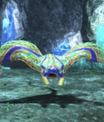

オルト・ミノタウロス スタン 不可巡回 初手は「111トンズ・スイング」の大きい円範囲くるので、離れるミノタウロスが止まると詠唱始まるが、逆にタンクが逃げ続ければ詠唱を遅らせることは可能「スワイプ」は前方扇範囲
 オルト・スティングレイ要注意F57–59 スタン 効く睡眠 効く 視覚感知接敵後、ランタゲにボディスラムでブリンクして来るボディスラムはノックバック付きその後「エレクトリックワーラル」（ドーナツ範囲）or「エクスパルション」（円形範囲）を詠唱避ける。当たると死ぬ（約32万ダメージ💦）複数釣っていると危ない